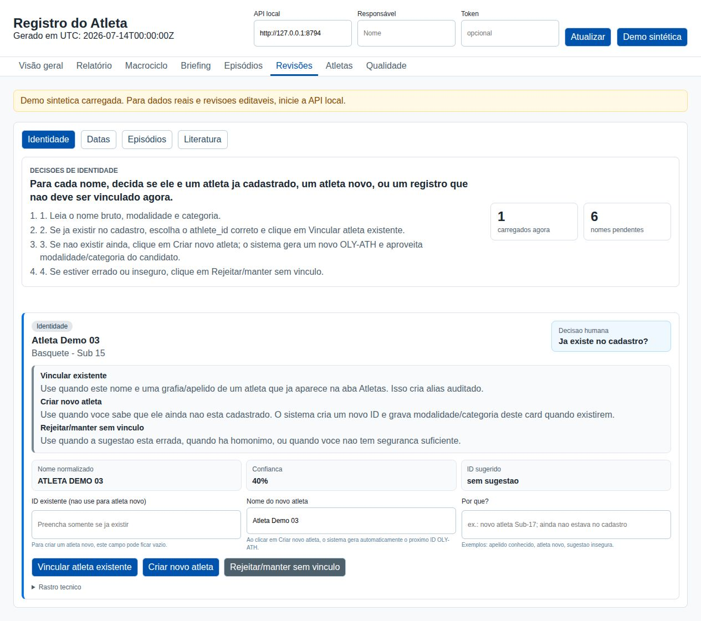

Registro do Atleta
Trabalho com planilhas e registros de atletas praticamente todos os dias. Quando comecei a estudar LLMs e modelos que podem rodar localmente, fiquei pensando em como eles poderiam ajudar nesse trabalho. A ideia do Registro do Atleta veio daí: reunir informações, facilitar a consulta e a revisão e usar IA como apoio quando fizer sentido.
Implementação / 02
- Núcleo
- Python 3.12+
- Dados
- SQLite local
- API
- FastAPI + Uvicorn
- Interface
- HTML, CSS e JavaScript
- Entrada
- Fontes XLSX e CSV configuradas
- Revisão
- Identidade, datas e duplicidades
- Testes
- Pytest
- Estado
- Em desenvolvimento; demo sintética

De onde veio a ideia
Trabalho com dados praticamente todos os dias. No esporte, isso significa lidar com planilhas de áreas diferentes, nomes escritos de formas diferentes, datas incompletas e informações que precisam ser conferidas antes de serem juntadas.
Quando comecei a estudar LLMs e modelos que podem rodar localmente, fiquei pensando em como eles poderiam ajudar nesse trabalho. A ideia do Registro do Atleta veio daí: reunir essas informações, facilitar a consulta e usar IA como apoio, sem deixar que o modelo decida sozinho o que é um dado correto.
O projeto recebe fontes configuradas, incluindo arquivos XLSX e CSV, e organiza registros de PSR, fisioterapia e avaliações físicas em tabelas próprias. A edição pública contém apenas código e dados sintéticos.
Organização dos registros
A leitura preserva os arquivos brutos. O sistema calcula hashes SHA-256, guarda cópias das fontes e carrega os registros em uma área intermediária do SQLite. As transformações mantêm referência ao registro de origem.
Processar novamente uma fonte que não mudou não deve criar cópias dos mesmos registros. Há um teste específico que importa a mesma planilha duas vezes e verifica que a segunda execução não acrescenta novos registros.
Identificação e duplicidades
Os nomes são normalizados e associados a um cadastro de atletas. Quando a correspondência tem baixa confiança, ela entra como candidata à revisão. As variações de nome confirmadas ficam vinculadas ao cadastro, com registro da decisão.
A identificação da pessoa e a duplicidade de uma informação são problemas separados. Mesmo depois de vincular um registro ao atleta, ainda pode ser necessário conferir se duas entradas representam o mesmo acontecimento. Esses achados ficam em uma fila própria.
Revisão humana
A API permite confirmar uma correspondência, rejeitá-la ou criar um novo cadastro. A revisão registra a decisão, a autoria e as observações. Os testes conferem, por exemplo, se confirmar uma identidade cria a associação de nome e grava a revisão no banco.
Também há filas para datas, duplicidades e alertas. A integração opcional com modelos locais pelo Ollama fica desabilitada por padrão; pode apoiar resumos e explicações, mas não tem autoridade para decidir sozinha a identidade de um atleta ou uma correção de data.
Arquitetura da aplicação
O núcleo usa Python e SQLite. Os dados são persistidos em um arquivo local, e a API em FastAPI atende o dashboard em HTML, CSS e JavaScript. Essa organização permite executar a aplicação no computador sem instalar um servidor de banco separado.
O projeto inclui backup pela API do SQLite e verificação de integridade na restauração. Também controla execuções concorrentes da rotina de processamento. A demo sintética é um modo de consulta separado: pode ser servida como site estático e não depende da API para mostrar as telas.
Limites e próximos testes
As fontes precisam ser configuradas para cada instalação. A demonstração não comprova que os formatos e as ambiguidades encontrados em uma rotina real estejam todos resolvidos. Ainda é necessário conferir as regras de identificação, datas e duplicidades com as fontes de cada contexto.
Os alertas publicados são exemplos técnicos, não recomendações clínicas. As análises estatísticas avançadas dependem de verificações de qualidade e metodologia. O projeto continua em desenvolvimento.
Ferramentas
- Python
- SQLite
- FastAPI
- HTML
- CSS
- JavaScript
- Pytest